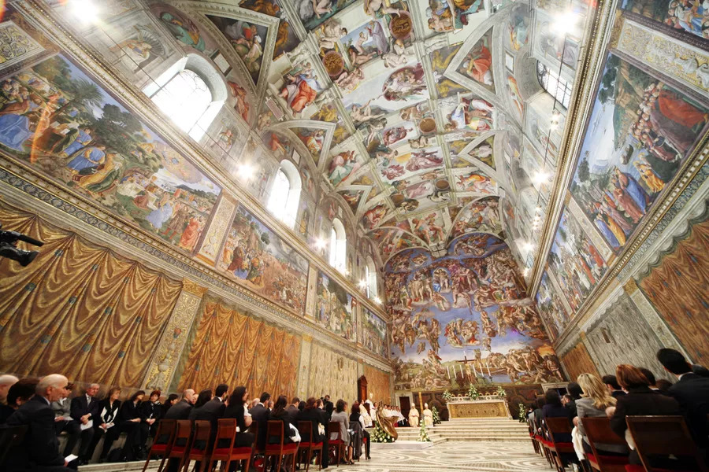

About the Author of this Website
- His full name is Stephen David Charkoudian
- He would be a Stephen Charkoudian jr., if his father's middle name wasn't George
- Charkoudian is an Armenian last name. Any last name that ends in -ian is likely Armenian. Example: Kardashian
- His major is Computer Science
- Also going for a minor in history
- His IP address is 100.0.242.213
- He's lived in Wellesley, Massachusetts his whole life
- Fun Fact: He's gone to the same summer camp since he was seven
- He was there as a camper for nine years, and then worked as a counselor for five
- A photo of his favorite place is:

The Sistine Chapel in the Vatican City. Visited on two seperate vacations, and it still takes his breath away.